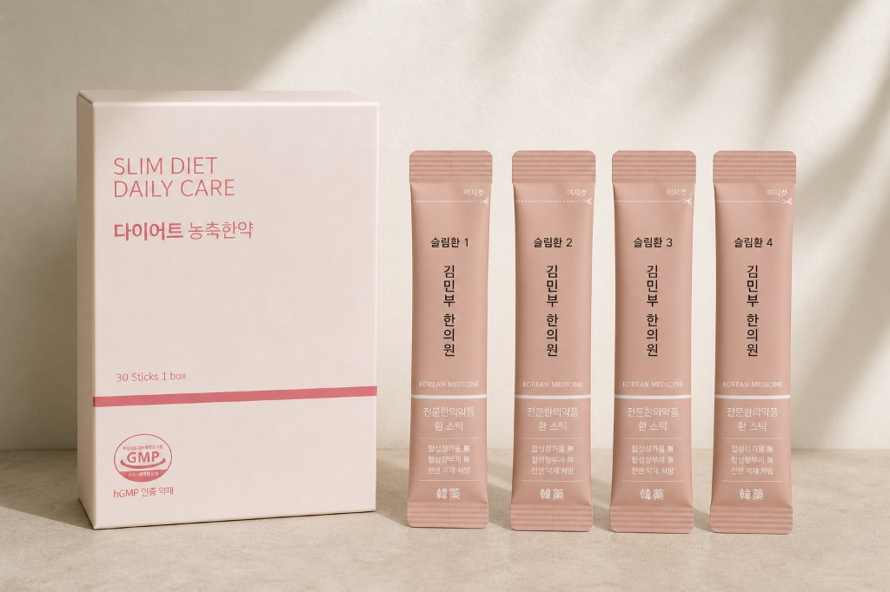
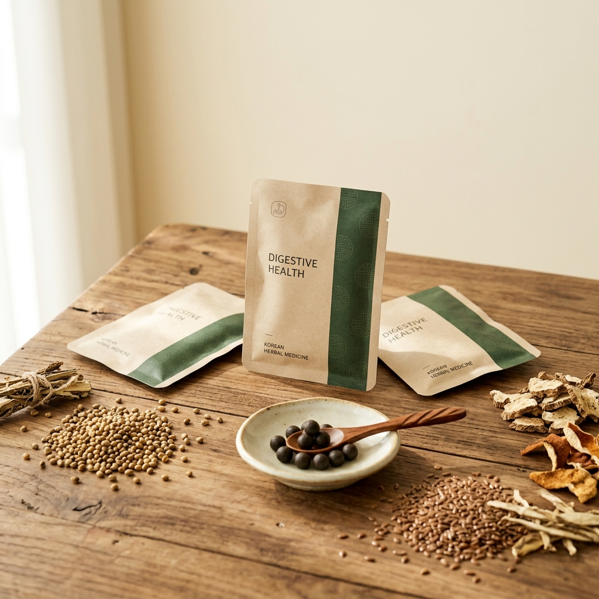
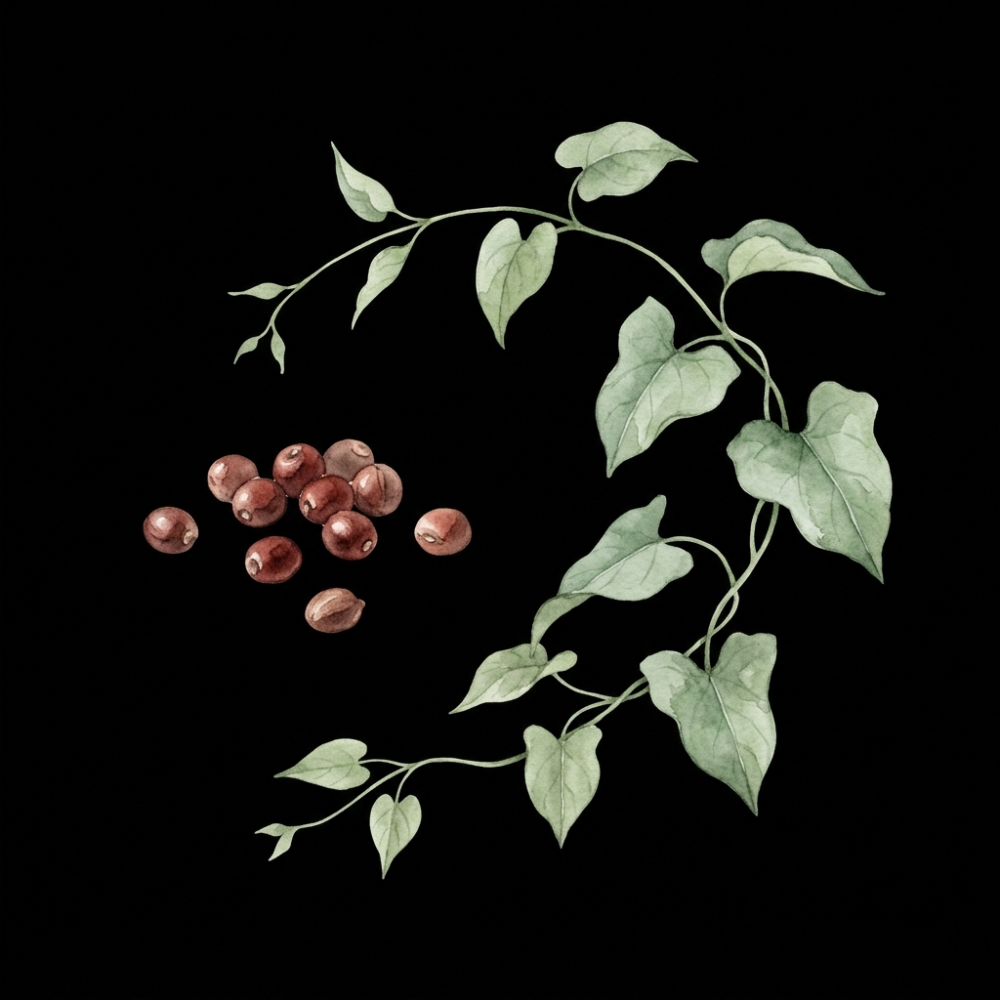
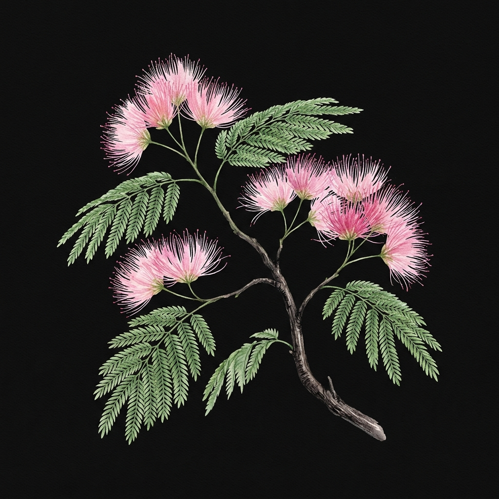
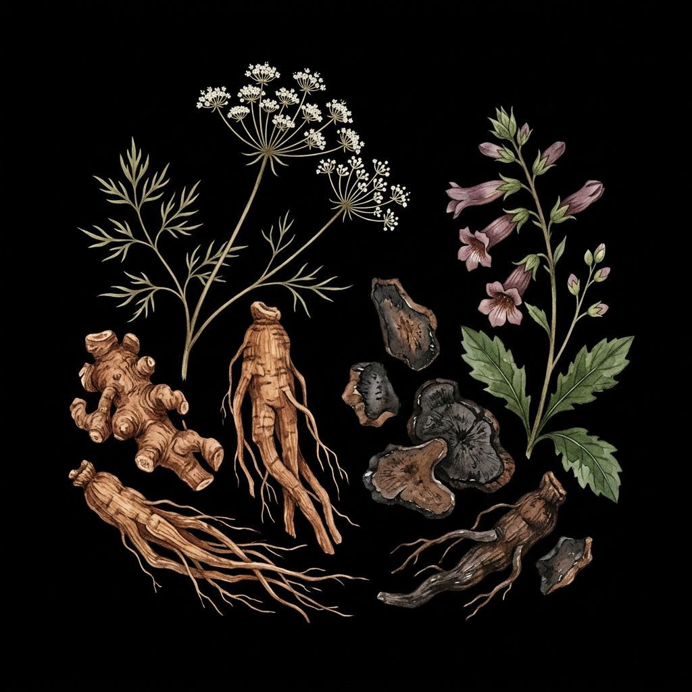
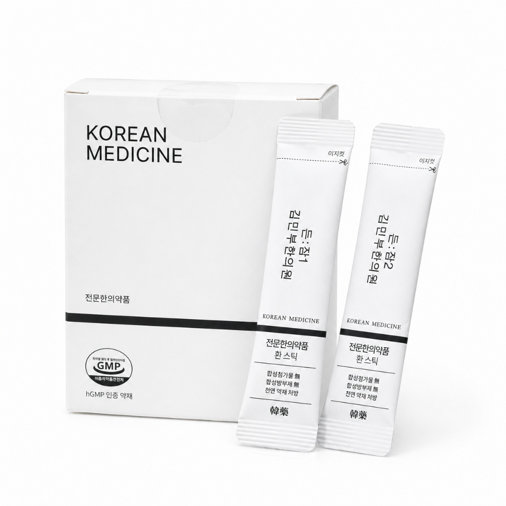

내몸에 온 한방연구소 - 자연의 처방, 건강한 변화 (슬림환, 쾌변환)
내일은 조금 더
가벼워질 수 있을까?
다이어트를 결심하고 매일밤 반복되는 후회.
바쁜 일상 속 운동할 시간은 없고, 식욕은 통제되지 않습니다.
"더 이상 무리한 방법으로 몸을 혹사시키지 마세요."
굶기만 하는 다이어트,
요요만 부를 뿐입니다.
필요한 것은 식욕 제어와
자연스러운 대사량
증가입니다.
건강한 다이어트의 정석,
슬림환
"10년간 총 1.2톤의 체중을 줄이고, 그 중 체지방만 1.1톤입니다."
근육은 살리고 지방만 빼는 다이어트
누적 68,710일분 처방 노하우. 자연 원료로 빚은 슬림환은 환자 개개인의 몸 상태에 맞는 맞춤형 처방으로 근육량을 지키며 체지방 연소를 돕습니다.

슬림환 효과와 안정성
다이어트의 핵심 성분인 마황의 함량을 FDA 1일 섭취 기준에 맞춰서 철저하게 처방합니다. 오랫동안 장복해도 몸에 전혀 무리가 없는 안전한 다이어트입니다.
총 4단계 맞춤 처방: 슬림환은 약효 강도에 따라 총 4단계로 세분화되어 있습니다.
처음 다이어트 한약을 드시는 분부터 다른 다이어트 약을 복용하여 내성이 생긴 분까지, 내 몸 상태와 경험에 따른 세밀한 단계별 맞춤 처방이 가능하여 부작용 걱정 없이 확실한 효과를 냅니다.
슬림환, 카톡으로 간편하게 시작하세요
원장님과의 비대면 진료를 통해 택배로 안전하게 받아보실 수 있습니다.
꽉 막힌 속,
내일 아침엔 가볍게 웃으세요!
쾌변의 정석, 김민부한의원 쾌변환
강한 변비약에 의존할수록
장은 더 무기력해집니다.
한의학에서는 장에 기름칠을 하고
수분을 채우는 윤장(潤腸)을 중시합니다.
쾌변의 정석,
쾌변환
"억지로 쥐어짜지 않습니다."
쾌변환은 도인, 아마인이 메마른 장에 수분과 기름칠을 더해 변을 부드럽게 만들고,
견우자, 대황이 장의 막힌 기운을 뚫어 배 속에 찬 가스와 노폐물을 자연스럽고 시원하게 배출해 줍니다.
김민부한의원 쾌변환
이런 분들에게 쾌변환이 필요합니다
- ✓ 급성 변비로 고생하시는 분
- ✓ 복부 팽만, 복통, 잦은 방귀로 불편하신 분
- ✓ 다이어트 중 배변 활동이 원활하지 않은 분
복용법: 1일 1~3회, 충분한 물과 함께 복용하세요.
주의: 평소 위장이 매우 약하신 분은 복용 전 상담해 주세요.

막힌 속, 오늘 바로 풀어내세요
오늘 밤도 뒤척이다
새벽을
맞이하셨나요?
자야 한다는 강박이 오히려 잠을 쫓아내는 밤.
수면제의 인위적인 마취가 아닌, 진정한 숙면이 필요합니다.
수면제에 의존할수록
스스로 잠들 힘을 잃게 됩니다.
필요한 것은 교감신경을 낮추고
부교감신경을 높여주는 근본적인 관리입니다.
자율신경 관리 처방,
든ː잠
"천연 안심 약재와 보약의 기능을 더해 잠의 질을 근본적으로 개선합니다."
산조인, 합환피, 야교등, 당귀, 숙지황, 황련, 육계 등의 순한 생약 성분이 스트레스로 과열된 심장과 뇌를 식혀주고, 부족한 진액을 보충하여 몸과 마음이 스스로 편안하게 잠들 수 있는 상태를 만들어 줍니다.
심장과 자율신경을 위한 보약
'든ː잠'은 수면 유도뿐만 아니라 몸의 부족한 기운을 채워주는
보약 성분이 함께 구성되어 건강하게 잠들 수 있도록 돕습니다.

산조인 / 야교등
심장을 안정시키고 기혈 순환을 도와 자연스러운 입면을 유도하는 대표적인 안신(安神) 약재입니다.

합환피
'마음을 즐겁게 한다'고 알려진 약재로, 스트레스와 우울감을 완화하여 마음을 평온하게 해줍니다.

당귀 / 숙지황
피를 생성하고 정기를 보충하는 핵심 보약 약재입니다. 소모된 진액을 채워 몸의 자생력을 높여줍니다.
황련 / 육계
심장의 열은 내리고 아랫배는 따뜻하게 하여, 자율신경의 균형(수승화강)을 잡아 깊은 잠을 돕습니다.
내몸에 온 든ː잠
이런 분들에게 '든ː잠'이 필요합니다
- ✓ 잠이 잘 오지 않아 수면제 복용을 고민 중이신 분
- ✓ 눕고 나서 잠들 때까지 시간이 오래 걸리는 분
- ✓ 자다가 자주 깨거나, 꿈을 너무 많이 꾸는 분
- ✓ 밤새 잠을 설쳐 아침에 일어날 때 몸이 무거운 분
- ✓ 수면제를 드셔도 잠을 오래 유지하지 못하는 분
복용 방법: 본 약은 '환' 제형입니다. 물과 함께 편하게 삼켜 복용하세요.
잠들기 전: 취침 1~2시간 전에 반드시 복용 (자율신경 휴식 모드 전환)
집중 관리: 불편함이 심할 때는 식사와 상관없이 하루 3회 복용
예방 및 관리: 수면 패턴 개선 후에도 하루 1회 보약처럼 꾸준히 복용 (자생력 증가)
※ 초등학생 이상이라면 누구나 안심하고 복용할 수 있습니다.

💊 수면제 병행 가이드
현재 수면제를 드시고 계신 분들도 병행이 가능합니다.
- 초기: 수면제와 '든ː잠'을 함께 복용하여 수면의 질을 안정시킵니다.
- 이후: 잠드는 것이 편해지고 수면의 질이 개선되면, 수면제를 조금씩 천천히 줄여나가는 방법으로 조절하세요.
💡 생활 습관 가이드
- ☕ 카페인 주의: 카페인은 교감신경을 자극합니다. 커피는 반드시 디카페인으로 드세요.
- 🍔 식단 관리: 술과 기름진 튀김류는 몸에 열을 만들어 숙면을 방해하므로 최대한 삼가주세요.
- 📱 빛 조절: 취침 1시간 전부터 스마트폰 사용을 줄이고 조명을 어둡게 하면 효과가 극대화됩니다.
편안한 밤, 다시 찾을 수 있습니다
김민부한의원
부설10년의 노하우,
데이터로 증명하는 내몸에 온
"가장 올바른 자연의 처방으로 건강한 변화를 돕겠습니다."
- 대구한의대학교 한의학과 졸업
- (전)달서구 한의사회 학술이사
- 대한 약침학회 학술위원
- 대한 약침학회 대의원
- 대한 척추신경추나의학회 정회원
- 대한 약침학회 정회원
- 대한 한방소아과학회 정회원
- 대한 한방 알레르기 및 면역학회 정회원